Le Nozze Di Figaro Cast
Zachary Angus (Conte) baritone, has been praised by Chicago Theater Review for his “earnest and spinning instrument.” Equally at home in standard operatic repertoire, new works, and American lyric theater, Mr. Angus’ career has afforded him the opportunity to perform in a wide breadth of styles. He has recently been featured at the International Summer Opera Festival of Morelia, Mexico in the title role of Gianni Schicchi and as cover for Seid in Opera Festival Chicago’s production of Verdi’s Il Corsaro. In the past year, Mr. Angus has taken the stage in Carmen as both Morales (Boheme Opera New Jersey) and Le Dancaïre (Indianapolis Opera). Additional career highlights include performing Poet in the second ever production of When Adonis Calls with Thompson Street Opera and performing Jennifer Higdon’s song cycle Civil Words with the composer in attendance at the Philadelphia Fringe Festival.
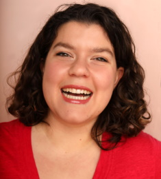
Olivia Broderick (Barbarina and Susanna Cover) is a performer, writer, and three garden gnomes stacked on top of one another masquerading as an adult woman. She recently made her role debut as Gretel with Opera on Tap Philadelphia in their production of Hansel und Gretel. She has performed with Wilmington Concert Opera, Opera Nova, and Opera Theatre of Montclair, and as a soloist with Creative Becoming and Arts at Covenant. Her written work has appeared in a variety of online and physical publications including Hyacinth Review, The Lovers Literary Journal, Armstrong Lit, and The Tide Rises Litmag.
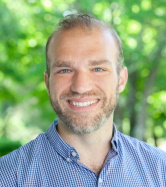
Michael Carson (Figaro and Antonio covers) has been a musician since way back in the fourth grade. He is a bass-baritone who enjoys singing opera, art songs and choral music. Michael sings with the Mendelssohn Chorus of Philadelphia and is a member of Angela Gilbert's vocal studio in Point Breeze, Philadelphia. In addition to his work as a singer Michael plays trombone and composes music for various ensembles. He works in business development and maintains a private hypnotherapy practice online and in Northern Liberties.
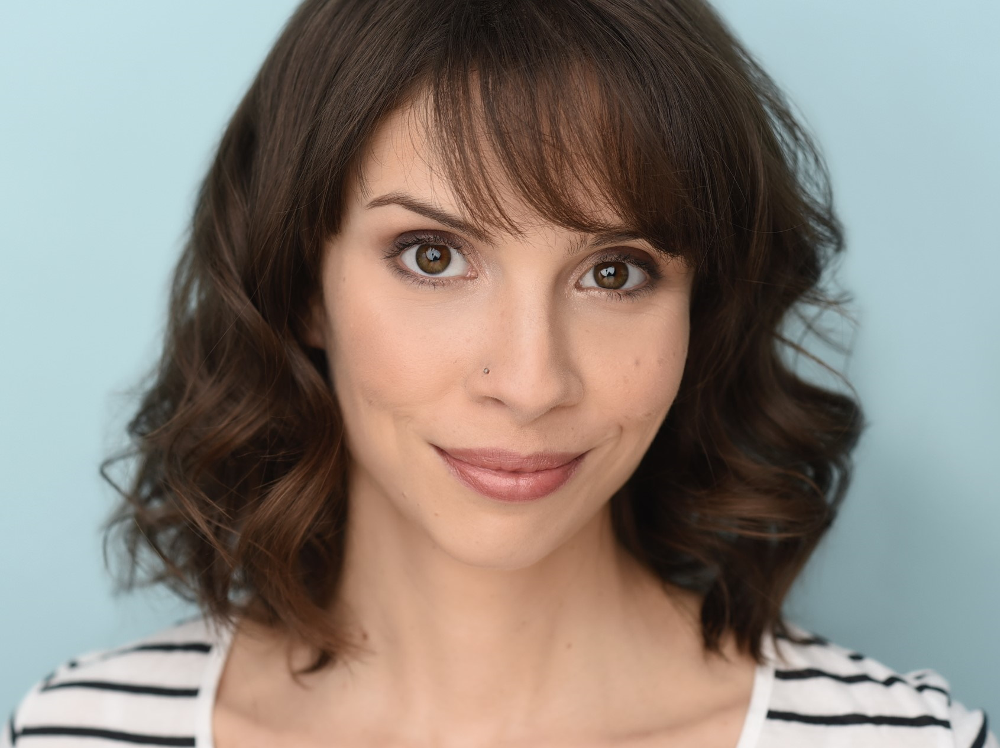
Elizabeth Clarkin-Breslin (Bartolo) is psyched to be back for another opera with DVOC. She appeared last season as Mrs. Ott in Susannah and Lola in Cavalleria Rusticana, and her other recent credits include Anne Page in The Merry Wives of Windsor and Beatrice in Much Ado About Nothing. When she's not on stage she enjoys playing with her puppy and hiding from her loveable but terrifying cat.
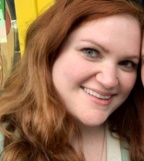
Heather Caporaso (Curzio and Bridesmaid 2 covers) Heather is so excited to be in her first operatic production! She has a degree in music education from the University of Delaware and has sung in prestigious choirs throughout the east coast and Europe. She has also been teaching private voice, flute, and piano lessons for over 20 years. In her free time she enjoys speaking in Italian, rescuing cats, and finding new excuses to have tea parties. She wants to thank her parents, friends, boyfriend, and voice teacher Audra for their amazing support!

Ryan Colbert (Artistic Director and Contessa cover) has been praised for “rendering text with a touching tenderness” (Berkshire Fine Arts) and making "a feast of quirky dramatic contrasts...while smoothing it with a velvety vocal line” (ArtsKnoxville). This season, she will sing Frasquita (Carmen) with Bella Diva Productions and again with the Orchestra Society of Philadelphia, cover Mother and the Witch (Hansel and Gretel) with Wilmington Concert Opera, Mother and Witch (Hansel und Gretel) with OOT Philadelphia, and Melisande (Pelleas et Melisande) with Amici Opera. Recent engagements include Nile in the world premiere of J Marchand Knight's "Cleopatra Built" and Tatyana cover (Eugene Onegin) with Opera Queens, Mimi (La boheme) and Nella (Gianni Schicchi) with Moon River Opera, Rosie in the world premiere of Frank Pesci's Royal Flush with Marble City Opera, and Alice Ford (Falstaff) with the International Summer Opera Festival of Morelia. She currently serves as Artistic Director of Delaware Valley Opera Company and Co-manager of Opera on Tap's Philadelphia chapter.
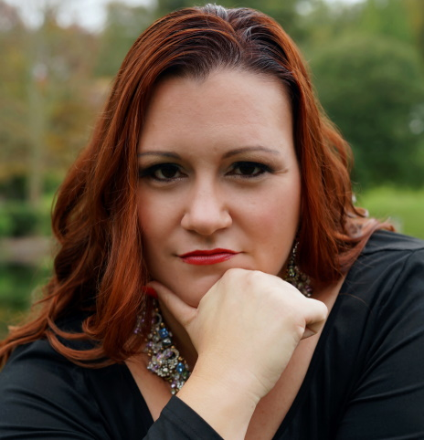
Debra Lynn Cotterall (Marcellina) is a graduate of Rowan University where she earned her Bachelor of Music in Vocal Performance and was a two-time recipient of the Feigen Opera Scholarship. While a member of the Rowan University Opera Company, she played several roles including her favorites: Micaela (Carmen), Violetta (La Traviata), and Magda Sorel (The Consul). Following her undergraduate studies, Debra Lynn received her MA in Creative Arts Therapy and has been a board-certified music therapist in the Greater Philadelphia area for over 10 years. In 2020, she appeared virtually as a soloist in Master Class which led to her being awarded the 2021 Frank Tenaglia Opera Fellowship. Since that time, Debra Lynn has been awarded the Honour Prize in the 2023 Amadeus International Music Competition. She is a proud roster member of both Opera on Tap Philadelphia and Opera by the Sea in Bradley Beach, NJ. She recently made her debut as a soloist with the Bucks County Gilbert & Sullivan Society this past fall. Debra Lynn can be seen in her upcoming role La Badessa in Suor Angelica with Opera Magnifico in April 2023. Debra Lynn has been a professional church cantor for many years and currently serves as the Director of Pastoral Music for Mission and Ministry at Neumann University. Debra Lynn enjoys spending time with her 3 beautiful little girls (ages 9, 7, &1) and her wonderful and supportive husband, John. She is so excited for her debut role with DVOC as Marcelina in Le nozze di Figaro!
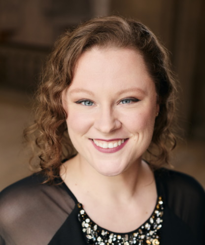
Coloratura soprano Alexandera Gilliam (Susanna) is thrilled to return to DVOC! Previously featured as Lehár’s eponymous Merry Widow in DVOC’s 2022 season, Gilliam has since performed as Gilda in Rigoletto with New Jersey Lyric Opera, Mabel in The Pirates of Penzance with The Savoy Company, and Yum-Yum in Bucks County Gilbert & Sullivan Society’s presentation of The Mikado. A multifaceted performer, Gilliam’s artistic pursuits include solo recitals; concert production; appearances in opera, operetta, and oratorio works; choral collaboration; and religious music leadership. Visit www.alexandragilliam.com for upcoming performance engagements.
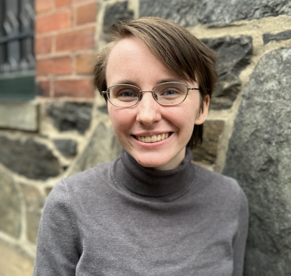
Cyril Hamilton (Curzio and Cherubino cover) is delighted to participate in his second Summer Opera Festival with the Delaware Valley Opera Company. He has been singing and acting for most of his life, most recently with the St. Monica and St. James Choir and the Bryn Mawr Shakespeare Performance Troupe respectively.
Sarah Anne Hughes (Bridesmaid 1 and Barbarina cover) is a Pennsylvania-based lyric soprano. Recent roles include Josephine in H.M.S. Pinafore, Clara in Passion, and Lily in The Secret Garden. She studied vocal performance at the Pennsylvania Academy of Music and American University. Many thanks to Rebecca, Ryan, and the Delaware Valley Opera Company for this opportunity.

Chris Lorge (Basilio) has a voice described by the Philadelphia Inquirer's David Patrick Stearns as "bright" and "penetrating". Most at home on the operatic stage, he has played roles including Hoffmann in Les Contes D’Hoffmann, Cavaradossi in Tosca, Don José in Carmen, and Ruggero in La Rondine with Delaware Valley Opera Company. Career highlights include lead roles in the world premieres of Paul Moravec's Danse Russe (Stravinsky) and Michael Ching's Slaying the Dragon (Jerry Krieg) with Center City Opera Theater.
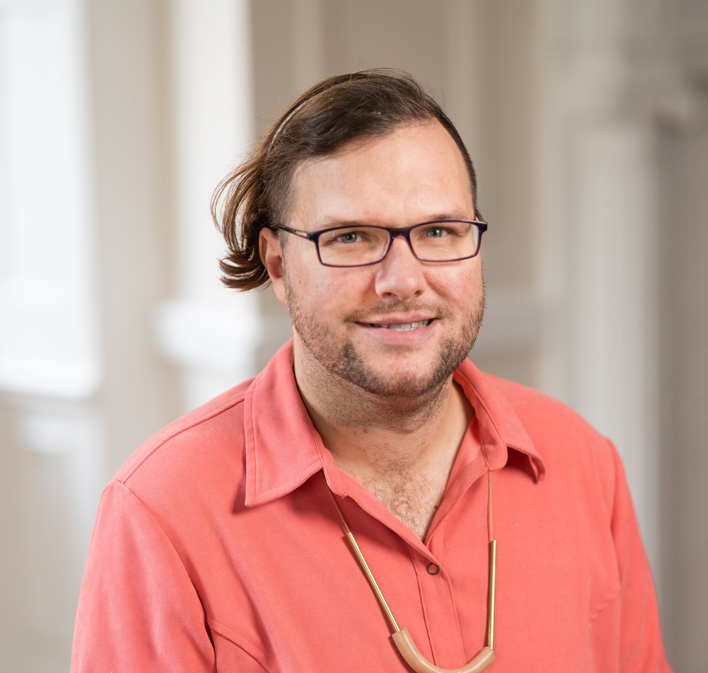
Reese Revak (Antonio) has been active as a collaborative pianist and opera coach in the Philadelphia area for over 15 years. Since 2011, they have been on the faculty of the Curtis Institute of Music as a staff pianist and coach in the voice and opera department. Though not a frequent singer on the operatic stage, Reese has sung the roles of Colline in La Boheme and L'Incredibile in Andrea Chenier with the Amici Opera Company, and has sung in choruses of all kinds since childhood. In addition, Reese enjoys spending time on the trails of the Wissahickon valley as well as composing music and poetry.
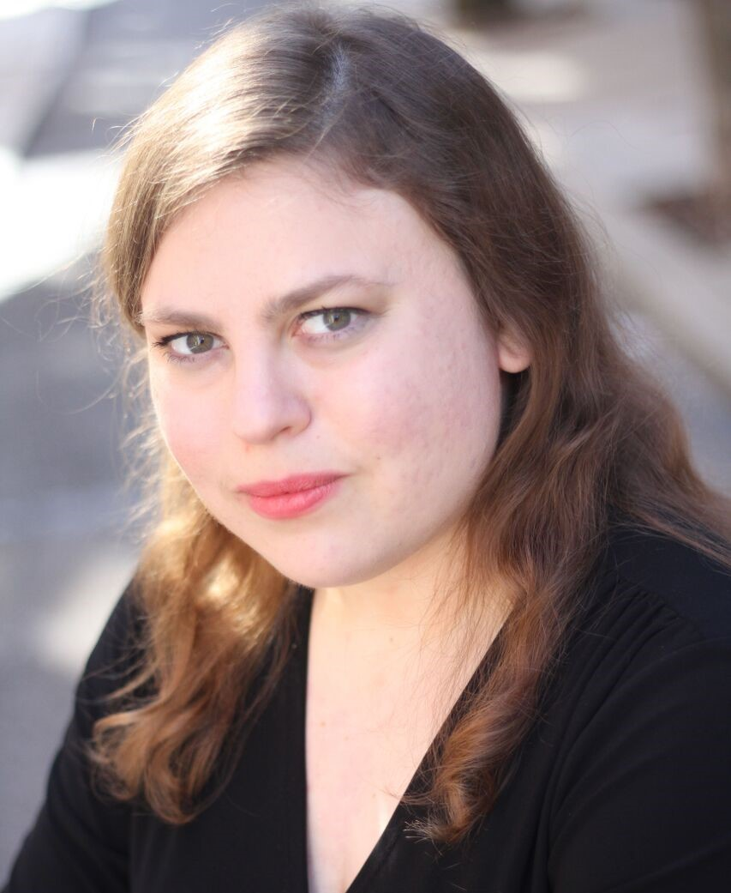
Julie Smith (Fidalma and Bartolo cover) is excited to perform again with Delaware Valley Opera Company. Last year, she was seen in the chorus for Goyescas and Zemrud in Abu Hassan; other performances with the company include Turtle in Liebovar, Bianca in La Rondine, and Suor Dolcina in Suor Angelica. In November, Julie will be portraying Audrey in the premiere of Brandon's Song for the company. Other recent performances include Amy in the rock musical Monster with Foot Lighters Theater, a soloist for Wilmington Concert Opera, and two productions with The Bucks County Gilbert and Sullivan Society: Giulia in The Gondoliers, and Pitti-Sing in The Mikado. Julie received her master's in vocal performance from Temple University and performs in the greater Philadelphia area. When she's not onstage, Julie is in the background as a photographer specializing in performance photos and headshots.

Amanda Staub (Cherubino and Rosina cover) has been praised as “brilliant and beautiful… a jewel.” (West Hawaii Today). This season, Amanda is excited to sing the roles of Hänsel in Hänsel und Gretel, Stephano in Roméo et Juliette, Cherubino in Le nozze di Figaro, & Rosina in Il barbiere di Siviglia. She made her role debut as Dido in Vienna, Austria last summer. As a resident artist at Tri Cities Opera, Amanda sang the role of Tisbe in Rossini’s la Cenerentola as well as covering the title role. More notable roles include Sesto in Giulio Cesare, Ariodante in Ariodante, and Hannah (after) in Laura Kaminsky’s As One. Passionate about education and creating opportunities for artists to thrive, Amanda has held multiple positions as a private instructor and artistic administrator. Amanda lives in Philadelphia, PA and is a student of Dr. Kathryn Leemhuis.
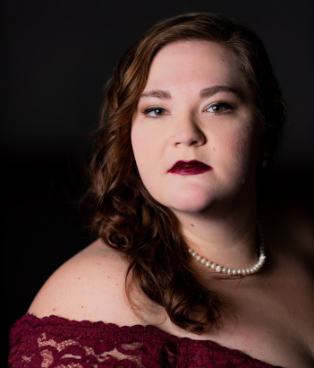
American-Canadian soprano Suzannah Waddington (Contessa) praised for her “bright, penetrating soprano,” (Opera News) is a recent graduate of the Cafritz Young Artist program with Washington National Opera (2020-2022). In the 2021/22, season she was a featured soloist for the Come Home Concert, Frasquita in Carmen, as well as premiering the role of The Monument in a newly commissioned opera entitled Written in Stone: Rise by Kamala Sankaram and A.M. Holmes. During the 2021 holiday season she was also the Soprano soloist for the National Symphony Orchestra’s performances of Mozart’s Requiem, Handel’s Messiah, and Bach’s Magnificat under Maestro Gianandrea Noseda. In February of 2020, she was a Semi-Finalist in the Metropolitan Opera National Council Auditions. As an Apprentice Artist with Palm Beach Opera for the 18-19 and 19-20 seasons, she made her debut in their family production of Die Fledermaus (The Revenge of the Bat) as Rosalinde. She received her bachelors and masters in vocal performance from Houghton College where she studied with Kelley Hijleh and Mitchell Hutchings. Her other opera credits include Isabella Stewart Gardiner in the 20 minute opera American Apollo, written for the American Opera Initiative program with Washington National Opera, Suor Angelica in Puccini’s Suor Angelica with Si Parla! Si Canta in Arona, Italy, as well as concert productions of Die Zauberflote (Pamina), Cosi fan tutte (Fiordiligi), and Mazepa (Maria) with Russian Opera Workshop. She is very excited to be making her DVOC debut in the one Mozart opera she has yet to do–another Mozart lady accomplished! She is a native of Philadelphia where she currently resides. Soli Deo Gloria.
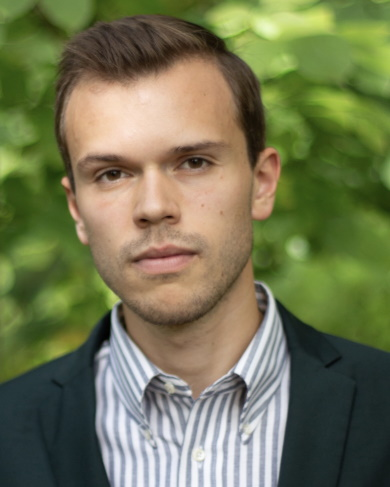
Stephan Walley (Figaro) Stephen Walley’s powerful and dark baritone voice, described as “defying laws of nature” with high notes that “launch like a canon,” has been thrilling audiences for over ten years, while bewildering and dismaying voice teachers and pedagogues alike. In his budding opera career, Stephen has performed in more than 30 professional operatic and musical theater productions. He most recently performed Paul in Kiss Me Kate with Central City Opera in their 2023 summer festival season and the Imperial Commissioner in Madama Butterfly with Boheme Opera NJ. Other credits include Escamillo in Carmen at Brevard Music Center and Marcello with Opera Magnifico in La Bohème, Ceprano in Rigoletto with Boheme Opera NJ. While obtaining a Master’s degree at University of Florida, Stephen appeared as the Father in Hansel and Gretel at the Phillips Center in Gainesville and as the Baritone Soloist in Puccini’s Messa di Gloria with the Ocala Master Choir. A graduate of Indiana University, Stephen performed as Masetto in Don Giovanni and The Imperial Commissioner in Madama Butterfly with IU Opera Theater. Other favorite roles include Figaro (Le Nozze di Figaro), Sir Despard (Ruddigore) and Falke (Die Fledermaus). Stephen has received awards from The Metropolitan Opera, Bel Canto Foundation, Matinee Musicale and Hal Leonard. As an artistic director, Stephen founded and runs Opera Magnifico in Gladstone, NJ, a quickly growing opera company that provides paid opportunities to aspiring artists. In February of 2025, Stephen will perform Enrico in Lucia di Lammermoor with Sotto Voce Opera in Buffalo, NY and excerpts from Don Carlo with the Amherst Symphony. Stephen is thrilled to join DVOC for the first time and to revisit the beloved role of Figaro!